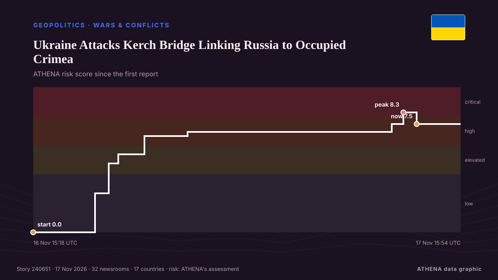

Πόλεμοι & συγκρούσεις
ΧορηγούμενοΠαρουσιάζεται από  Cybernetics and Artificial Intelligence Lab Welcome to the Cybernetics and Artificial Intelligence Laboratory, established at the Department of Business Administration of the National and Kapodistrian University of Athens. The lab is headed by Professor Dimitrios Thomakos. The lab aims to do research that can be published in top venues. Our research uses tools and methods of Artificial Intelligence, and lies in the following areas: - Forecasting - Decision making - Cyber security - Finance We are always looking forward to collaborating with exceptional students!
Cybernetics and Artificial Intelligence Lab Welcome to the Cybernetics and Artificial Intelligence Laboratory, established at the Department of Business Administration of the National and Kapodistrian University of Athens. The lab is headed by Professor Dimitrios Thomakos. The lab aims to do research that can be published in top venues. Our research uses tools and methods of Artificial Intelligence, and lies in the following areas: - Forecasting - Decision making - Cyber security - Finance We are always looking forward to collaborating with exceptional students!
| 4 Νοε | 0 |
|---|---|
| 5 Νοε | 0 |
| 6 Νοε | 1 |
| 7 Νοε | 0 |
| 8 Νοε | 2 |
| 9 Νοε | 0 |
| 10 Νοε | 1 |
| 11 Νοε | 1 |
| 12 Νοε | 1 |
| 13 Νοε | 3 |
| 14 Νοε | 1 |
| 15 Νοε | 9 |
| 16 Νοε | 5 |
| 17 Νοε | 0 |
Οι τίτλοι των ειδήσεων παρουσιάζονται στα αγγλικά, όπως δημοσιεύτηκαν.

Ukraine Attacks Kerch Bridge Linking Russia to Occupied Crimea
Destroying the structure, the only one connecting Russia to the occupied Crimean Peninsula, has long been a top objective for Kyiv. από The New York Times (World)
BAHRAIN ISSUES ALERT, URGES PUBLIC TO REMAIN CALM
MANAMA, Nov 17: The Bahrain Ministry of Interior calls on citizens and residents to remain calm, head to the nearest safe location, and follow the news through official channels t... από Arab Times
Iran's IRGC strikes radar at US military base in Bahrain
Manama - Blasts and sirens rang out over Bahrain and authorities urged residents to seek shelter on Sunday as Iran's Guards said they had attacked a US military base in the Gulf... από Oman Observer
Two major Kyiv bridges hit in Russian attack, mayor says
The Porsche Zahid dealership in Kyiv region was damaged in a Russian attack and has temporarily suspended operations. από Ukrinform (English)
Production suspended at Iraq's Khor Mor gas field after drone attack
Production was halted on Sunday at Iraq's Khor Mor gas field, one of the largest in the northern Kurdistan region, after a drone attack hit the field. από The New Arab
Russia Says Its Defenses Intercepted over 1,300 Ukrainian Drones in a Major Attack
Russia’s Defense Ministry said Monday it downed 1,336 Ukrainian drones in what would be the highest number of interceptions during an aerial attack since Moscow’s all-out invasion of its neighbor… από The National Herald
Senior Hamas commander who helped oversee Oct. 7 attack killed in Israeli strike in Gaza
Hamas said on Sunday that a senior commander who helped plan and oversee the Oct. από CBC News
Bukele says Salvadoran troops destroyed gang HQ in Haiti
Santo Domingo.- President Luis Abinader expressed support for Salvadoran President Nayib Bukele regarding the security situation in Haiti, while highlighting the Dominican Republic’s cooperation with… από Dominican Today
Iran rules out UN inspections of damaged nuclear sites until war ends
Iran has refused to allow UN inspections of its damaged nuclear sites until the Middle East conflict concludes and the US fulfills its terms. από Arab News
Estonia to close border with Russia after arson attack on local drone maker
Estonia plans to close its road border crossings with Russia in response to an attempted arson attack against Estonian defense company Threod Systems. από Defense News
Two Houthi drones intercepted in Makkah region, coalition says
RIYADH: Two drones launched by Yemen’s Iran-aligned Houthis were intercepted and destroyed in the Makkah region, the Coalition to Support Legitimacy in Yemen said on Sunday afternoon. από Arab News
Three Commercial Ships Hit by Drones in Black Sea Near Romania
Drones have struck three commercial ships in the Black Sea near Romania's Sulina canal, Prime Minister Luca Niculescu said on Sunday, adding that his armed forces had scrambled fighter jets… από MarineLink
Ukraine Facility: EU approves largest-ever payment of EUR 8B to Kyiv
The Council of the European Union on Monday approved a decision that will allow Kyiv to receive just under EUR 8 billion under the Ukraine Facility program in the near future. από Ukrinform (English)
Von der Leyen to pledge new support for Romania and Bulgaria
European Commission (EC) President Ursula von der Leyen is visiting Romania and Bulgaria on November 9 and 10, the EC. από The Sofia Globe
Finland reports strike on Russian warship in Baltic Sea
The Finnish military said on Thursday that their forces had detected a “strike” on a Russian warship in the Baltic Sea the previous day, but the security situation in the area remained stable. από Ukrinform (English)
Yemen government forces withdraw from area near Bab el-Mandeb Strait, Houthis in control
Yemeni forces fighting for the internationally recognised Saudi-backed government said on Sunday that they were withdrawing from an area overlooking the strategic Bab el-Mandeb Strait, leaving the… από Business Recorder
Ukraine strikes two petrochemical plants in Tatarstan and Russian helicopter manufacturing facility
Ukraine's General Staff says Ukrainian forces struck Nizhnekamskneftekhim, the Nizhnekamsk refinery's only primary distillation unit and the Monolit helicopter parts plant in Bryansk Oblast. από Ukrainska Pravda (English)
Indonesia, 17 countries condemn Israeli airstrike on Gaza hospital
Indonesia and 17 other Arab and Islamic countries have strongly condemned an Israeli airstrike on the Nasser Medical ... από Antara (English)
Saudi-led coalition says it intercepts 2 Houthi ballistic missiles targeting Riyadh
The Saudi-led coalition said early Sunday that its air defenses intercepted and destroyed two ballistic missiles launched by Yemen’s Houthis toward Riyadh, the Saudi capital. από Daily Mirror